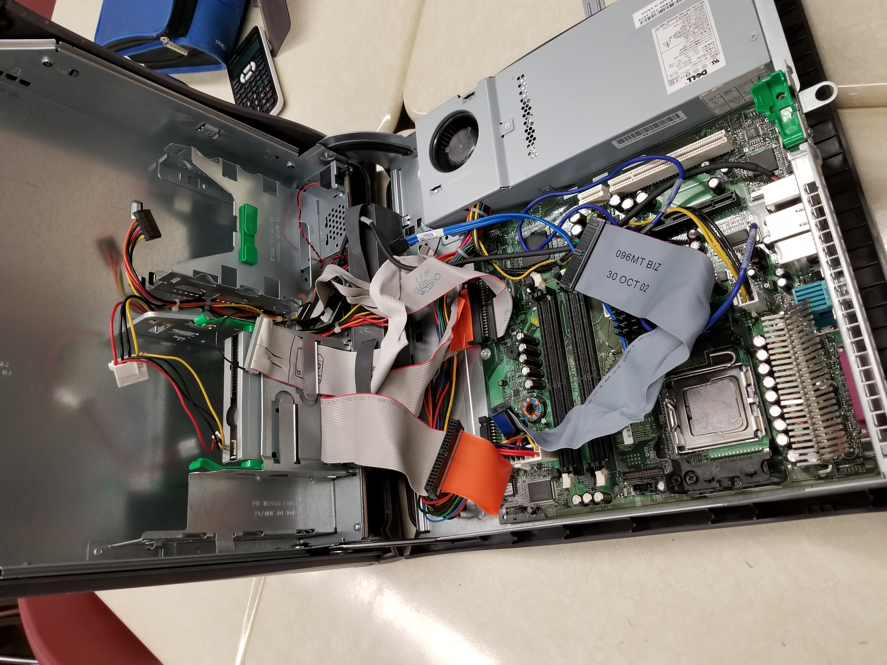

Taking the Computer Apart
To take the Computer apart, we first had to take off the cover.
^^^Image of the PC after the cover was taken off^^^
Next, we proceeded to take the mother board off, by unscrewing some screws and pulling hard.

^^^Image of the Mother Board taken off^^^
After that, we took out the Floppy disk drive, unscrewed the hinge screws (making it two separate parts) and unscrewed a small I/O panel.
Photo of the Floppy Disk Drive Below

Photo of the hinge taken off Below

Photo of the I/O Panel Below

Now everything has been taken off the panel on the floppy disk side! Hooray!
Photo of empty panel below

Next, we took of the power supply. This was REALLY tricky because first we had to take the fan off, and then we had to bend the cover to get at the screws INSIDE the box because we could not get to a screw that was locking the cover on, which is why the cover is bent. But we did get it back on in the end, although it was quite tricky and Torrie started to bleed at some point.
Photo of the fan being taken off

Photo of the power supply taken off

Now we're done! "ALL" we have to do now is put it back together.
Photo of the empty panel